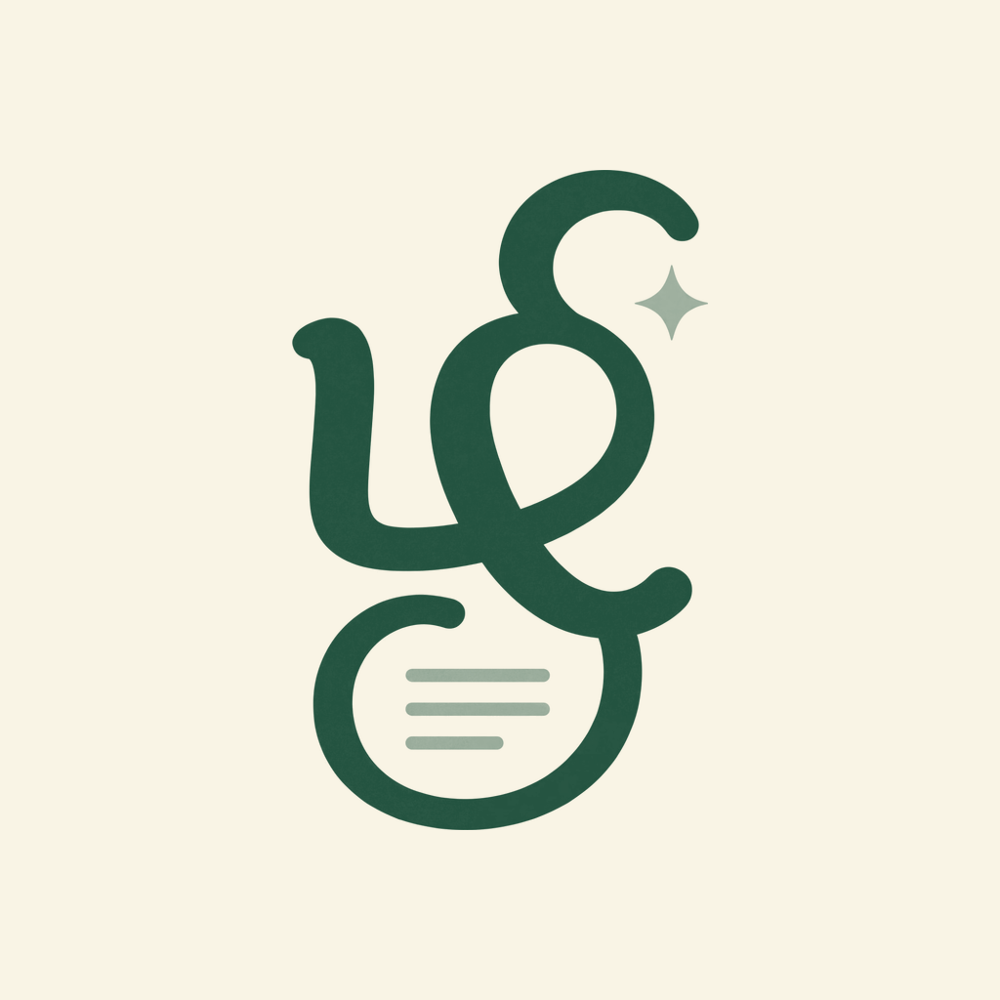

Naazhi
Naazhi
Version 8.2.0
Change things
Change things
from chat.
- Edit or delete in chatTo-dos, notes and journal entries. You pick, you confirm.
- A new Original iconCream and green, on the app and on desktop.
- You choose what we learnAnonymous insights, with your text hidden. Off in one switch.
Update the app, or open it on the web.naazhi.app · @naazhiapp